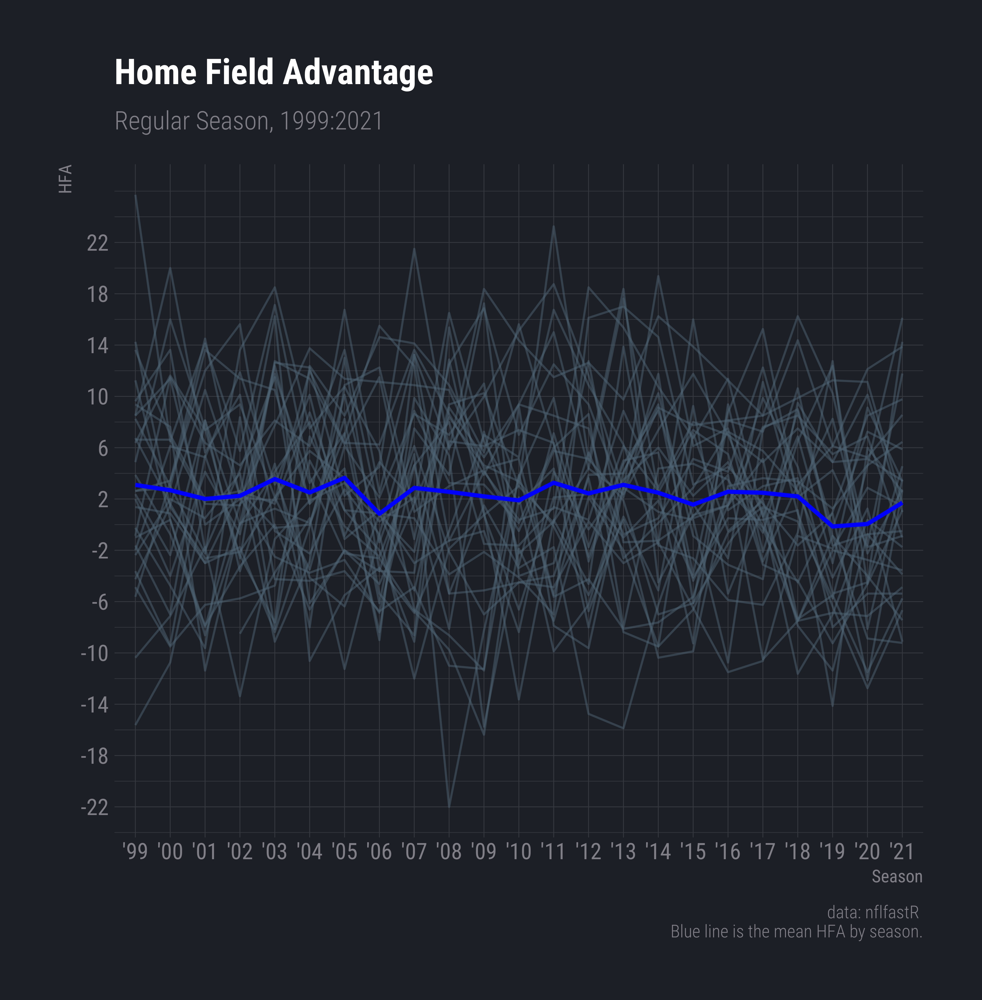
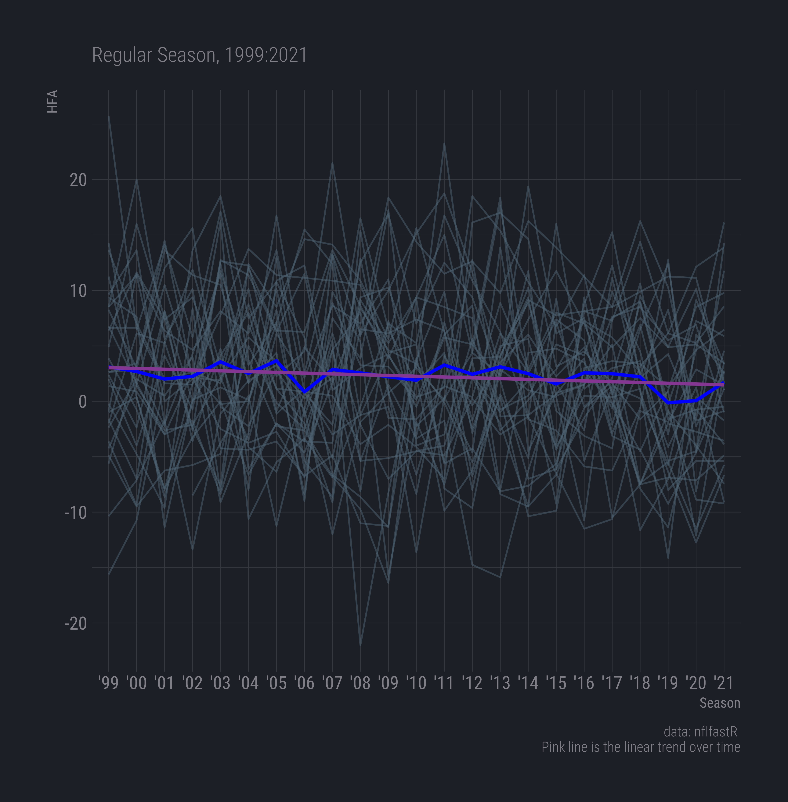
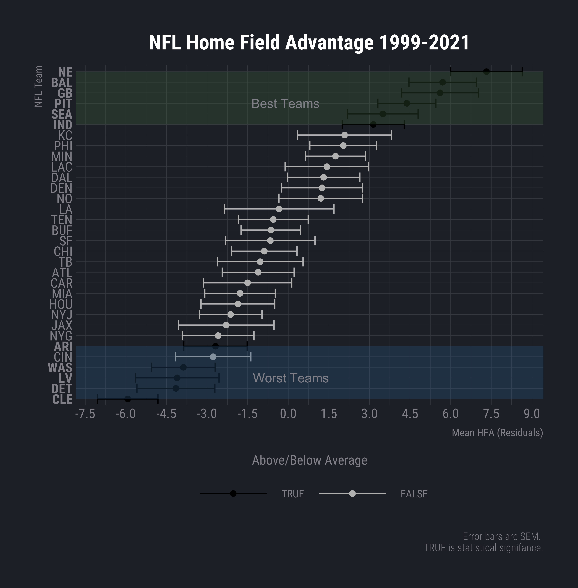
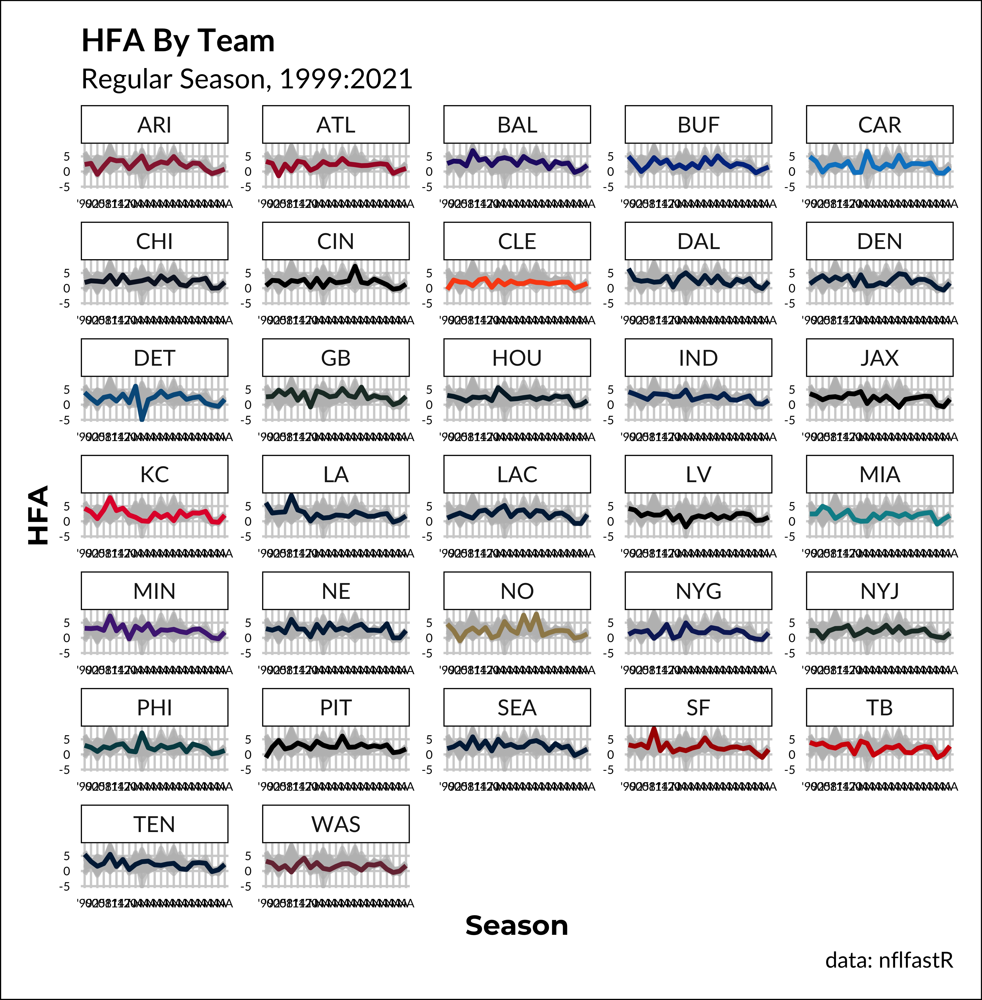
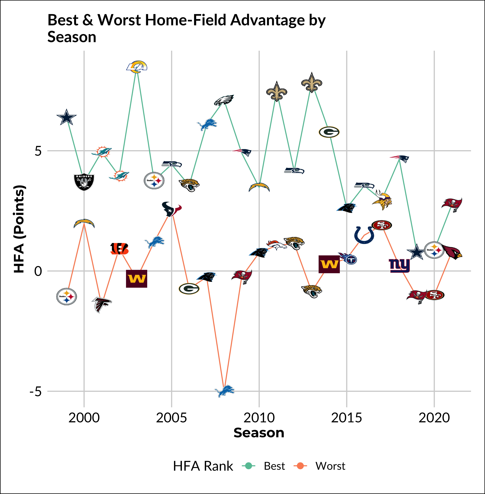

Code
library(tidyverse)
library(broom)
library(rstan)
library(ggrepel)
library(gghighlight)
library(gt)
library(gtExtras)
future::plan("multisession")library(tidyverse)
library(broom)
library(rstan)
library(ggrepel)
library(gghighlight)
library(gt)
library(gtExtras)
future::plan("multisession")If you do not have the data on your local device you can either swap the path with https://raw.githubusercontent.com/guga31bb/nflfastR-data/master/data/play_by_play_{x}.rds or get it via nflfastR::load_pbp(1999:2021). Note that it will take a while since there is over 1 million rows by 366-ish columns, which is why I filter and drop rows straight away.
Using {x} with glue() allows us to loop every value input from the map_df call into the location. I found this super cool the first time I saw it. This is exactly like f strings in Python if you are familiar with that.
pbp <- purrr::map_df(c(1999:2021), function(x) {
readRDS(
glue::glue("~/Documents/nfl/data/pbp/play_by_play_{x}.rds")
)}) %>%
filter(
season_type == 'REG',
# drop values that no plays occur
# e.g. timeout, halftime, etc.
!is.na(posteam_type)
) %>%
select(
game_id, season, week, posteam_type, season_type,
home_team, away_team, home_score, away_score) %>%
group_by(game_id) %>%
# this will give two rows for each game, one for
# the home team, one for the away team
#slice(n()) or distinct(game_id, posteam_type,
# .keep_all = TRUE) if you only want one observation per row
distinct(.keep_all = TRUE)# team
league_wide_win_team <- pbp %>%
distinct(game_id, .keep_all = TRUE) %>%
mutate(score_diff = home_score - away_score) %>%
group_by(season, home_team) %>%
summarise(
n = n(),
home_win = mean(home_score - away_score > 0),
home_points_diff = sum(home_score - away_score)
) %>% ungroup() %>%
mutate(
mean_point_diff = home_points_diff / n,
# so you can plot is sequentially
week_n = row_number()
)
#add team colours for plotting
league_wide_win_team <- league_wide_win_team %>%
left_join(
select(
nflfastR::teams_colors_logos,
home_team = team_abbr,
team_name, team_color,
team_color2)
)league_wide_win_team %>%
mutate(
#LV colour is grey so I am using their secondary colour here
team_color = ifelse(team_color == "#a5acaf", "#000000", team_color),
season_label = paste0("'", substr(season, 3, 4)),
season_label = as_factor(season_label)
) %>%
ggplot(aes(
# the label is a character, so get 99 at the start
x = fct_reorder(season_label, season),
y = mean_point_diff,
colour = team_color,
group = home_team,
)) +
geom_line(size = 1.15) +
scale_x_discrete(breaks = paste0("'", seq(1999, 2021, 3) |> substr(3, 4))) +
gghighlight(use_direct_label = FALSE, keep_scales = TRUE) +
scale_color_identity(aesthetics = c("color", "fill")) +
facet_wrap(~home_team, scales = "free", ncol = 5L) +
labs(
x = "Season",
y = "HFA",
title = "HFA By Team",
subtitle = "Regular Season, 1999:2021",
caption = "data: nflfastR"
) +
becausejustynfun::white_theme() +
theme(axis.text = element_text(size = 6))league_wide_win_team %>%
ggplot(aes(
x = factor(season),
y = mean_point_diff,
group = 1)) +
geom_line(aes(group = factor(home_team)), alpha = 0.5) +
geom_line(stat = 'summary', fun = 'mean', colour = 'blue', size = 1) +
scale_y_continuous(breaks = seq(-22, 24, 4)) +
scale_x_discrete(labels = paste0("'", substr(c(1999:2021), 3, 4))) +
labs(
x = "Season",
y = "HFA",
title = "Home Field Advantage",
subtitle = "Regular Season, 1999:2021",
caption = "data: nflfastR \nBlue line is the mean HFA by season."
) +
theme(axis.text.x = element_text(angle = 15, hjust = 1)) +
hrbrthemes::theme_ft_rc()
mod <- lm(mean_point_diff ~ factor(season), data = league_wide_win_team)
tidy(mod) %>%
gt() %>%
fmt_number(
columns = c(2:5),
decimals = 3)| term | estimate | std.error | statistic | p.value |
|---|---|---|---|---|
| (Intercept) | 3.100 | 1.319 | 2.349 | 0.019 |
| factor(season)2000 | −0.416 | 1.866 | −0.223 | 0.823 |
| factor(season)2001 | −1.092 | 1.866 | −0.585 | 0.559 |
| factor(season)2002 | −0.854 | 1.851 | −0.461 | 0.645 |
| factor(season)2003 | 0.455 | 1.851 | 0.246 | 0.806 |
| factor(season)2004 | −0.592 | 1.851 | −0.320 | 0.749 |
| factor(season)2005 | 0.549 | 1.851 | 0.296 | 0.767 |
| factor(season)2006 | −2.252 | 1.851 | −1.217 | 0.224 |
| factor(season)2007 | −0.232 | 1.851 | −0.126 | 0.900 |
| factor(season)2008 | −0.541 | 1.851 | −0.292 | 0.770 |
| factor(season)2009 | −0.893 | 1.851 | −0.482 | 0.630 |
| factor(season)2010 | −1.205 | 1.851 | −0.651 | 0.515 |
| factor(season)2011 | 0.166 | 1.851 | 0.090 | 0.929 |
| factor(season)2012 | −0.666 | 1.851 | −0.360 | 0.719 |
| factor(season)2013 | 0.006 | 1.851 | 0.003 | 0.997 |
| factor(season)2014 | −0.611 | 1.851 | −0.330 | 0.741 |
| factor(season)2015 | −1.537 | 1.851 | −0.830 | 0.407 |
| factor(season)2016 | −0.533 | 1.851 | −0.288 | 0.773 |
| factor(season)2017 | −0.615 | 1.851 | −0.332 | 0.740 |
| factor(season)2018 | −0.897 | 1.851 | −0.484 | 0.628 |
| factor(season)2019 | −3.240 | 1.851 | −1.750 | 0.080 |
| factor(season)2020 | −3.045 | 1.851 | −1.645 | 0.100 |
| factor(season)2021 | −1.389 | 1.851 | −0.750 | 0.453 |
league_wide_win_team %>%
ggplot(aes(
x = factor(season),
y = mean_point_diff, group = 1)) +
geom_line(aes(group = factor(home_team)), alpha = 1/2) +
geom_line(stat = 'summary', fun = 'mean', colour = 'blue', size = 1) +
labs(
x = "Season",
y = "HFA",
subtitle = "Regular Season, 1999:2021",
caption = "data: nflfastR \n Pink line is the linear trend over time"
) +
stat_smooth(method = 'lm', col = '#984ea3', se = FALSE, size = 1) +
scale_x_discrete(labels = paste0("'", substr(c(1999:2021), 3, 4))) +
theme(axis.text.x = element_text(angle = 15, hjust = 1)) +
hrbrthemes::theme_ft_rc()
Removing this linear trend and focus on residuals will examine teams’ performance after controlling for this decrease in hfa
Average the residuals for each team then, perform a one-sample t-test to see teams that were above or below the average HFA despite the decrease HFA over this time
league_wide_win_team <- league_wide_win_team %>%
mutate(rel_hfa = resid(mod))
best_hfa <- league_wide_win_team %>%
group_by(home_team) %>%
summarise(
mean = mean(rel_hfa),
sd = sd(rel_hfa),
sem = sd(rel_hfa)/sqrt(n()),
tpval = t.test(rel_hfa)[['p.value']]
#tpval = t.test(rel_hfa)$p.value
) %>%
mutate(sig = tpval < .05)
best_hfa %>%
gt() %>%
fmt_number(columns = c(2:5), decimals = 3) %>%
cols_label(
home_team = "Home Team",
mean = 'Mean',
sd = 'SD',
sem = 'SEM',
tpval = "T P-val",
sig = 'Sig'
) | Home Team | Mean | SD | SEM | T P-val | Sig |
|---|---|---|---|---|---|
| ARI | −2.689 | 5.612 | 1.170 | 0.031 | TRUE |
| ATL | −1.113 | 6.373 | 1.329 | 0.411 | FALSE |
| BAL | 5.704 | 5.966 | 1.244 | 0.000 | TRUE |
| BUF | −0.645 | 5.273 | 1.100 | 0.564 | FALSE |
| CAR | −1.505 | 7.831 | 1.633 | 0.367 | FALSE |
| CHI | −0.885 | 5.788 | 1.207 | 0.471 | FALSE |
| CIN | −2.777 | 6.690 | 1.395 | 0.059 | FALSE |
| CLE | −5.936 | 5.377 | 1.121 | 0.000 | TRUE |
| DAL | 1.305 | 6.428 | 1.340 | 0.341 | FALSE |
| DEN | 1.247 | 7.145 | 1.490 | 0.412 | FALSE |
| DET | −4.151 | 6.905 | 1.440 | 0.009 | TRUE |
| GB | 5.609 | 6.789 | 1.416 | 0.001 | TRUE |
| HOU | −1.863 | 6.101 | 1.364 | 0.188 | FALSE |
| IND | 3.140 | 5.496 | 1.146 | 0.012 | TRUE |
| JAX | −2.289 | 8.450 | 1.762 | 0.207 | FALSE |
| KC | 2.079 | 8.307 | 1.732 | 0.243 | FALSE |
| LA | −0.338 | 9.709 | 2.025 | 0.869 | FALSE |
| LAC | 1.427 | 7.408 | 1.545 | 0.366 | FALSE |
| LV | −4.105 | 7.413 | 1.546 | 0.014 | TRUE |
| MIA | −1.783 | 6.240 | 1.301 | 0.185 | FALSE |
| MIN | 1.745 | 5.338 | 1.113 | 0.131 | FALSE |
| NE | 7.323 | 6.328 | 1.319 | 0.000 | TRUE |
| NO | 1.202 | 7.425 | 1.548 | 0.446 | FALSE |
| NYG | −2.592 | 6.353 | 1.325 | 0.063 | FALSE |
| NYJ | −2.128 | 5.547 | 1.157 | 0.079 | FALSE |
| PHI | 2.033 | 5.930 | 1.236 | 0.114 | FALSE |
| PIT | 4.381 | 5.144 | 1.073 | 0.000 | TRUE |
| SEA | 3.490 | 6.268 | 1.307 | 0.014 | TRUE |
| SF | −0.662 | 7.921 | 1.652 | 0.692 | FALSE |
| TB | −1.037 | 7.583 | 1.581 | 0.519 | FALSE |
| TEN | −0.556 | 6.196 | 1.292 | 0.671 | FALSE |
| WAS | −3.874 | 5.619 | 1.172 | 0.003 | TRUE |
Plot the average residuals, their SEM, colouring if they are significantly different form 0
# y.axis bold conditional
best_hfa_sort <- arrange(best_hfa, mean)
axisFace <- if_else(best_hfa_sort[['sig']] == TRUE, 'bold', 'plain')
# shading conditional
above <- best_hfa %>%
filter(mean > 0, sig == TRUE) %>%
arrange(mean)
average <- best_hfa %>%
filter(sig == FALSE)
below <- best_hfa %>%
filter(mean < 0, sig == TRUE) %>%
arrange(mean)best_hfa %>%
ggplot(aes(
x = mean,
y = fct_reorder(home_team, mean),
colour = sig
)) +
geom_errorbarh(aes(
xmin = mean - sem,
xmax = mean + sem
)) +
geom_point(size = 2) +
scale_color_manual(
values = c("grey", "black"),
guide = guide_legend(
reverse = TRUE,
title = "Above/Below Average",
title.position = "top"
)
) +
scale_x_continuous(breaks = seq(-7.5, 9, 1.5)) +
labs(
x = "Mean HFA (Residuals)",
y = "NFL Team",
title = "NFL Home Field Advantage 1999-2021",
caption = "Error bars are SEM. \n TRUE is statistical signifance."
) +
hrbrthemes::theme_ft_rc() +
theme(
axis.text.y = element_text(face = axisFace),
plot.title = element_text(hjust = 0.5),
legend.position = "bottom",
legend.key = element_rect(colour = "transparent", fill = "transparent"),
legend.key.width = unit(1, "in"),
legend.key.height = unit(.5, "in"),
legend.title.align = .5,
axis.title.x = element_text(vjust = -1)
) +
annotate("rect",
xmin = -Inf,
xmax = Inf,
ymax = above[['home_team']][nrow(above)],
ymin = above[['home_team']][1],
fill = "#486e48",
colour = NA,
alpha = 1 / 3
) +
annotate("rect",
xmin = -Inf,
xmax = Inf,
ymax = below[['home_team']][nrow(below)],
ymin = below[['home_team']][1],
fill = "#346991",
colour = NA,
alpha = 1 / 3
) +
annotate("text", x = -.1, y = above[['home_team']][3], label = "Best Teams") +
annotate("text", x = .1, y = below[['home_team']][3], label = "Worst Teams")
# league wide
league_win <- pbp %>%
distinct(game_id, .keep_all = TRUE) %>%
mutate(score_diff = home_score - away_score) %>%
group_by(season) %>%
summarise(
n = n(),
home_win = mean(home_score - away_score > 0),
home_points_diff = sum(home_score - away_score)
) %>%
mutate(
mean_point_diff = home_points_diff / n
)
#season, week wide
weekly_team_win <- pbp %>%
distinct(game_id, .keep_all = TRUE) %>%
mutate(score_diff = home_score - away_score) %>%
group_by(season, week, home_team) %>%
summarise(
away_team,
home_win = mean(home_score - away_score > 0),
home_result = sum(home_score - away_score),
.groups = "drop"
)
weekly_team_win1 <- pbp %>%
distinct(game_id, .keep_all = TRUE) %>%
mutate(score_diff = home_score - away_score) %>%
group_by(season, week) %>%
summarise(
team = home_team,
n = n(),
home_win = mean(home_score - away_score > 0),
home_points_diff = sum(home_score - away_score),
.groups = "drop"
) %>%
mutate(
mean_point_diff = home_points_diff / n,
week_n = row_number()
) data{
int<lower=1> N_games; // number of games
int<lower=1> N_teams; // number of teams
int<lower=1,upper=N_teams> home_team[N_games]; // home team ID
int<lower=1,upper=N_teams> away_team[N_games]; // away team ID
vector[N_games] score; // home point differential
}
parameters{
// hierarchical parameters
real alpha_mean;
real<lower=0> alpha_sigma;
// team skill variance
real<lower=0> mu_sigma;
// observation variance
real<lower=0> score_sigma;
// HFA and skill vectors
vector[N_teams] alpha_raw;
vector[N_teams] mu;
}
transformed parameters{
vector[N_teams] alpha;
// centered parameterization helps mixing of alpha_sigma a lot
alpha = alpha_mean + alpha_raw*alpha_sigma;
}
model{
vector[N_games] score_mean;
score_mean = alpha[home_team] + mu[home_team] - mu[away_team]; //mean for each game
//currently using STAN default priors, uncomment to change
//alpha_mean ~ normal(0,10);
//alpha_sigma ~ normal(0,10);
alpha_raw ~ std_normal();
//mu_sigma ~ normal(0,10);
mu ~ normal(0,mu_sigma);
score ~ normal(score_mean,score_sigma);
}options(mc.cores = parallel::detectCores())
weekly_team_win <- pbp %>%
distinct(game_id, .keep_all = TRUE) %>%
mutate(score_diff = home_score - away_score) %>%
group_by(season, week, home_team) %>%
summarise(
away_team,
home_win = mean(home_score - away_score > 0),
home_result = sum(home_score - away_score),
.groups = "drop"
)
team_vars <- distinct(weekly_team_win, home_team) %>% pull()fits <- lapply(1999:2021,function(y){
year <- y
stan_df <- weekly_team_win %>%
filter(
season == year #, location == "Home"
)
stan_list <- list(
N_games = stan_df %>% nrow,
N_teams = 32,
home_team = stan_df %>%
pull(home_team) %>% match(team_vars),
away_team = stan_df %>%
pull(away_team) %>% match(team_vars),
score = stan_df %>%
pull(home_result)
)
fit <- stan('posts/nfl_hfa/season_model.stan',
data = stan_list,
iter = 2000,
chains = 3,
control = list(adapt_delta = 0.99),
pars = c("score_mean"),
include = FALSE)
fit
})if(!dir.exists("posts/nfl_hfa/output")) dir.create("posts/nfl_hfa/output")
save(team_vars, fits, file = "posts/nfl_hfa/output/team_effects_default_priors.Rdata")
load("output/team_effects_default_priors.Rdata")
stan_home_results <- map_df(1999:2021,function(y){
fit <- fits[[y-1998]]
output <- summary(fit,pars = c("alpha","alpha_mean","alpha_sigma"))$summary %>%
as_tibble(rownames = "parameter") %>%
mutate(season = y,
team = c(team_vars,"ALL","ALL"))
output
})
write_csv(stan_home_results, "stan_home_results.csv")stan_home_results <- read_csv('stan_home_results.csv')#all teams HFA by season and team
stan_home_results %>%
left_join(nflfastR::teams_colors_logos, by = c("team" = "team_abbr")) %>%
mutate(
# LV colour is grey so I am using their secondary colour here
team_color = ifelse(team_color == "#a5acaf", "#000000", team_color),
season_label = paste0("'", substr(season, 3, 4)),
season_label = as_factor(season_label)
) %>%
filter(!(team %in% "ALL")) %>%
ggplot(aes(
x = fct_reorder(season_label, season),
# x = season,
y = mean,
group = team,
colour = team_color
)) +
geom_line(size = 1.15) +
scale_x_discrete(labels = paste0("'", substr(c(1999:2021), 3, 4))) +
#scale_x_discrete(breaks = c("'99", "'01", "'03", "'05", "'07", "'09", "'11", "'13", "'15", "'17", "'19", "'21")) +
gghighlight(use_direct_label = FALSE, keep_scales = TRUE) +
scale_color_identity(aesthetics = c("color", "fill")) +
facet_wrap(vars(team), scales = "free", ncol = 5L) +
labs(
x = "Season",
y = "HFA",
title = "HFA By Team",
subtitle = "Regular Season, 1999:2021",
caption = "data: nflfastR"
) +
becausejustynfun::white_theme() +
theme(axis.text = element_text(size = 6))
#best and worst
stan_home_results %>%
left_join(nflfastR::teams_colors_logos, by = c("team" = "team_abbr")) %>%
filter(team != "ALL") %>%
group_by(season) %>%
mutate(mean_rank = rank(mean), n = n()) %>%
filter(mean_rank %in% c(1, 32)) %>%
mutate(
hfa_bw = case_when(
mean_rank == 1 ~ "Worst",
mean_rank == 32 ~ "Best"
)) %>%
ggplot(aes(x = season, y = mean, color = hfa_bw)) +
geom_line() +
ggimage::geom_image(aes(image = team_logo_wikipedia, color = NULL), size = 0.05, by = "width") +
becausejustynfun::white_theme() +
#theme_bw() +
scale_color_brewer(palette = "Set2") +
theme(legend.position = "bottom") +
labs(
colour = "HFA Rank",
x = "Season",
y = "HFA (Points)",
title = "Best & Worst Home-Field Advantage by \nSeason"
) 
stan_table_df <- stan_home_results %>%
filter(
parameter != "alpha_sigma",
parameter != "alpha_mean"
) %>%
group_by(team) %>%
summarise(
sd = sd(mean),
mean = mean(mean)
) %>%
arrange(-mean) %>%
left_join(select(nflfastR::teams_colors_logos, team = team_abbr, team_logo_espn), by = "team") %>%
select(team_logo_espn, team, mean, sd)
stan_table_df %>%
gt() %>%
gtExtras::gt_img_rows(team_logo_espn) %>%
tab_spanner(
label = "HFA",
columns = c(mean, sd)
) %>%
cols_label(
team_logo_espn = "",
team = md("**Team**"),
mean = md("**Mean**"),
sd = md("**SD**")
) %>%
fmt_number(columns = c(3, 4), decimals = 2)| Team | HFA | ||
|---|---|---|---|
| Mean | SD | ||
 |
BAL | 3.03 | 1.55 |
 |
GB | 2.89 | 1.62 |
 |
NE | 2.81 | 1.52 |
 |
SEA | 2.75 | 1.47 |
 |
PIT | 2.57 | 1.42 |
 |
DAL | 2.55 | 1.54 |
 |
MIN | 2.53 | 1.64 |
 |
IND | 2.52 | 1.15 |
 |
LA | 2.44 | 1.86 |
 |
NO | 2.41 | 2.20 |
 |
SF | 2.41 | 1.82 |
 |
BUF | 2.32 | 1.52 |
 |
DEN | 2.32 | 1.50 |
 |
TEN | 2.29 | 1.44 |
 |
KC | 2.29 | 1.87 |
 |
PHI | 2.28 | 1.44 |
 |
LAC | 2.27 | 1.44 |
 |
CHI | 2.24 | 1.19 |
 |
HOU | 2.21 | 1.19 |
 |
ARI | 2.19 | 1.63 |
 |
TB | 2.12 | 1.50 |
 |
NYJ | 2.09 | 1.21 |
 |
CAR | 2.06 | 1.87 |
 |
JAX | 2.06 | 1.37 |
 |
CIN | 1.94 | 1.54 |
 |
DET | 1.94 | 2.16 |
 |
MIA | 1.93 | 1.37 |
 |
ATL | 1.93 | 1.38 |
 |
NYG | 1.75 | 1.42 |
 |
LV | 1.72 | 1.29 |
 |
CLE | 1.62 | 0.91 |
 |
WAS | 1.57 | 1.20 |